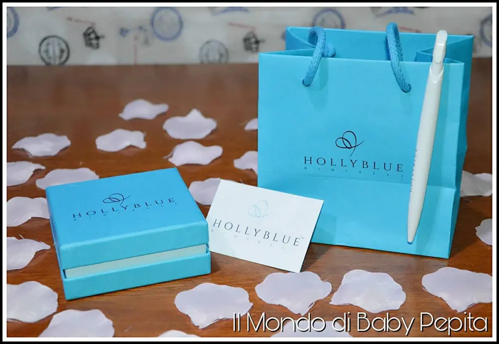
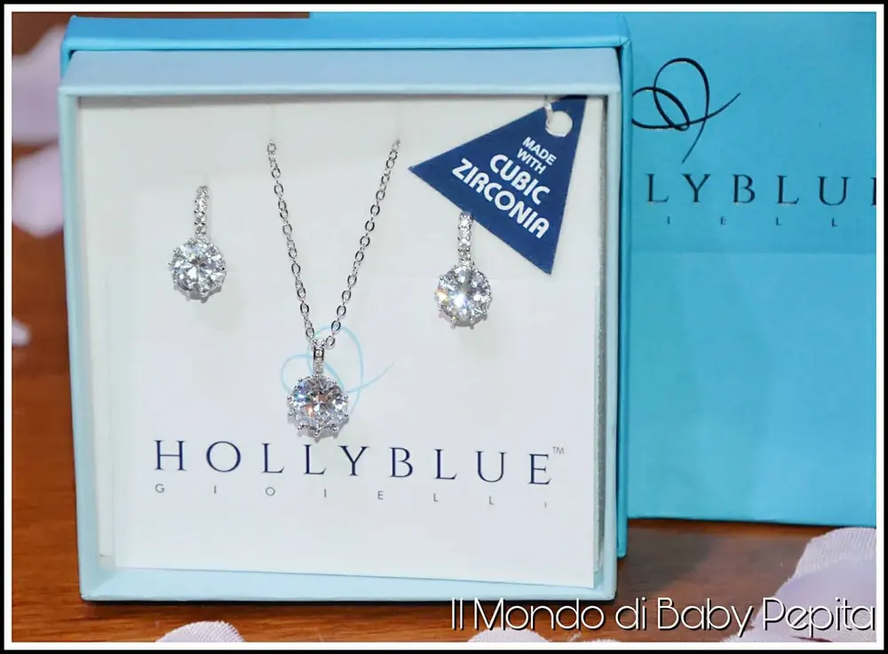
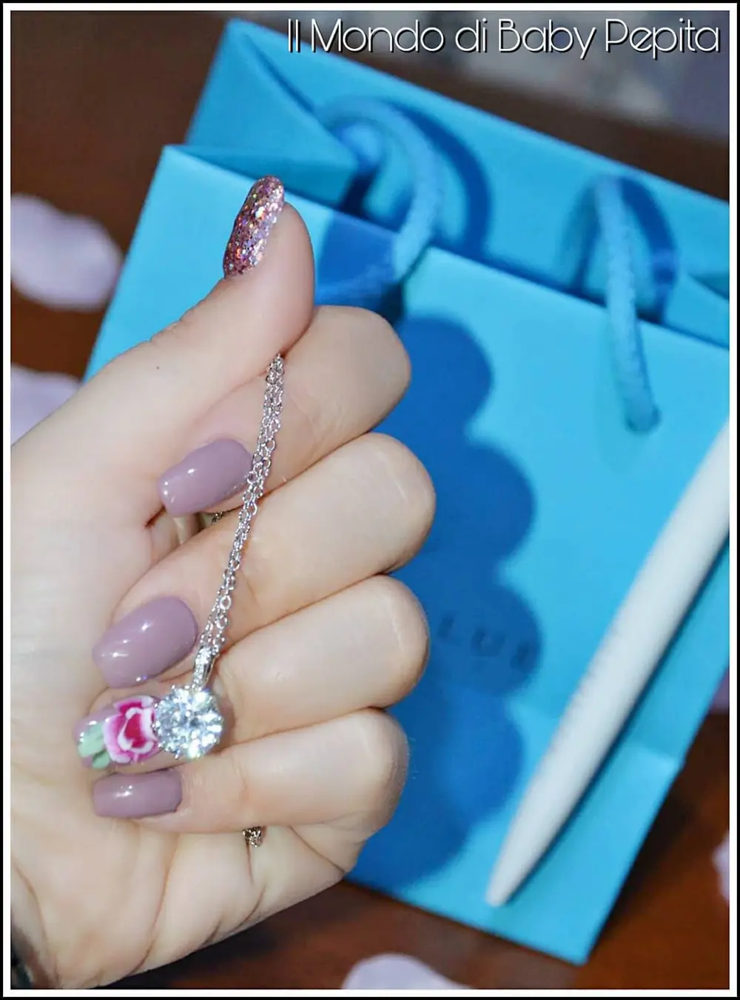
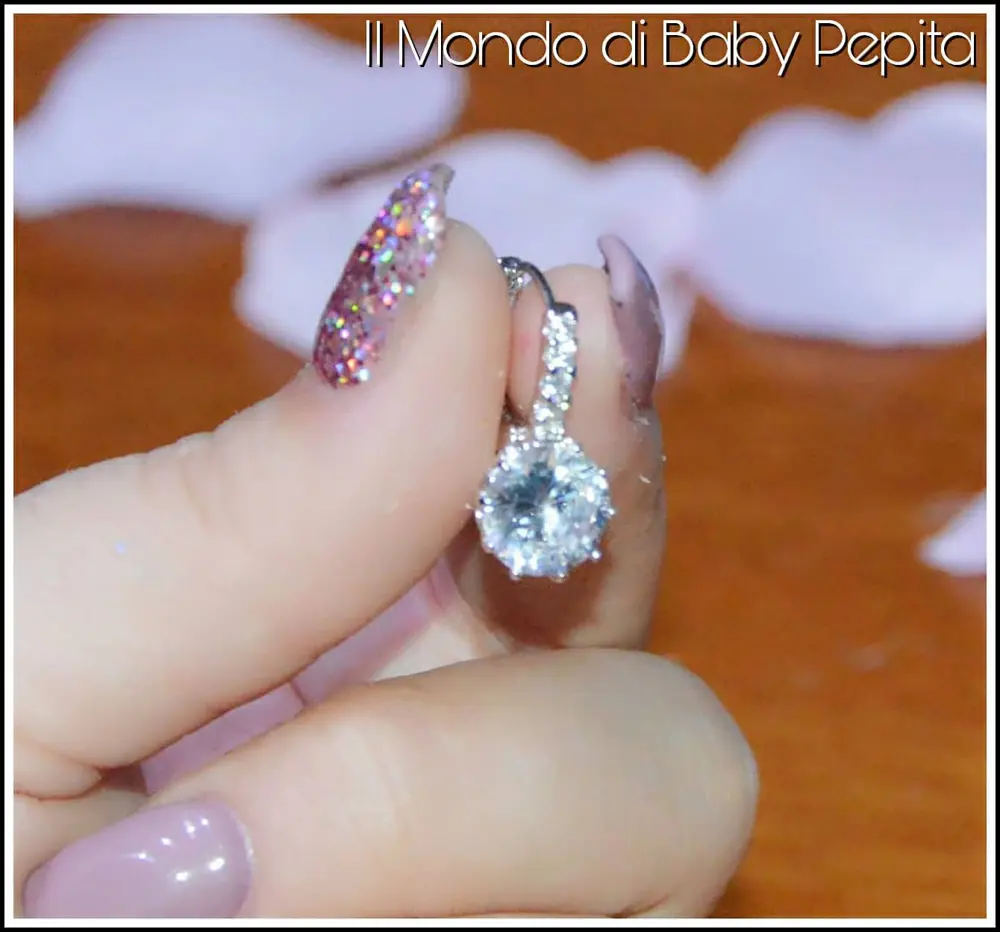
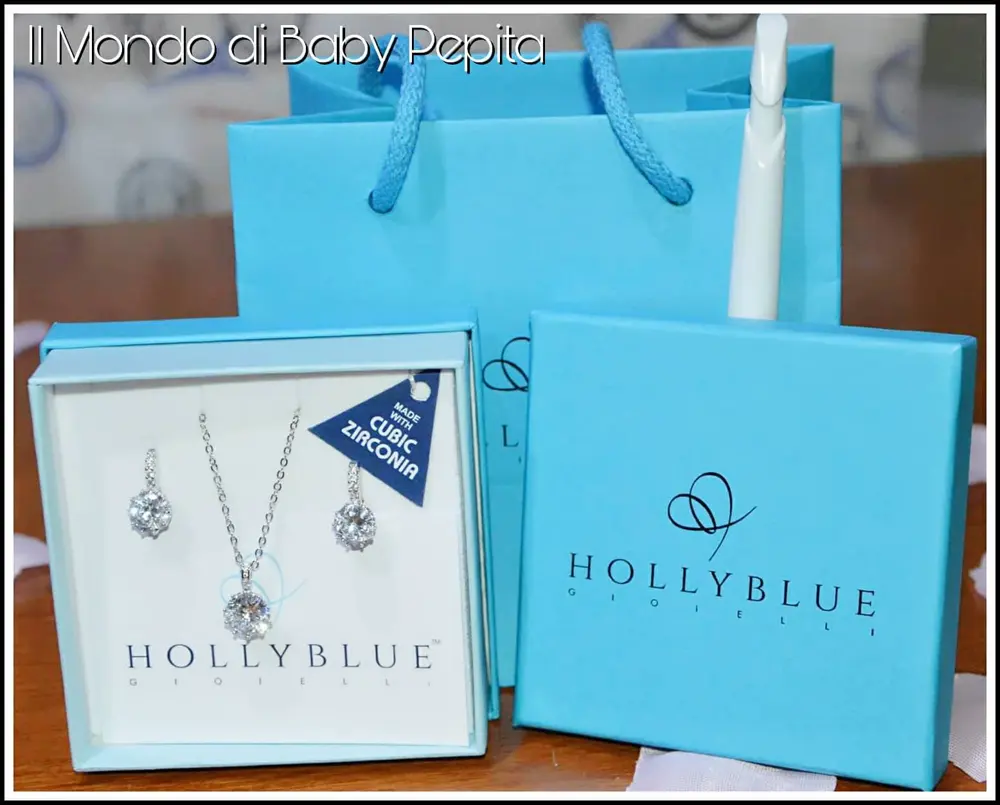
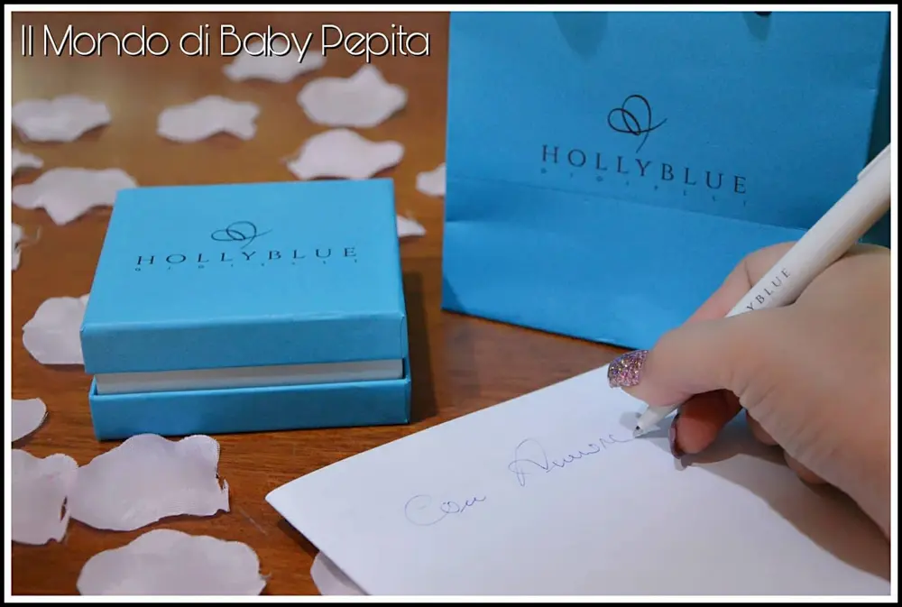

GIOIELLI - HOLLYBLUE

Ogni gioiello è una scultura in miniatura.
Gioielli: In effetti quando compriamo o regaliamo un gioiello stiamo sempre attenti a osservare bene l'effetto che potrebbe fare sulla persona che lo indosserà.
Ogni gioiello ha le sue caratteristiche ed io oggi sono qui per mostrarvi un marchio da un'impronta elegante ma al contempo giovanile e alla moda "HOLLYBLUE".
Progettati per ogni occasione con un disegn unico ed innovativo, realizzati con materiali compatibili con il ph della nostra pelle in modo da evitare allergie, infatti ogni materiale utilizzato dalla Hollyblue gioielli sono privi di piombo e nichel.
Le pietre utilizzate sono rigorosamente cristalli Cubic Zirconia tagliati ad acqua ad altissima precisione per garantire un riflesso di luce unica. Unito al packaging dal colore celeste realizzato totalmente in Italia, diventa un vero e proprio piacere regalare attimi di lucentezza in ogni situazione.

L'azienda vanta una vasta gamma di prodotti e spazia da articoli più classici a quelli più di moda.
È fornito sul proprio sito, di un catalogo dettagliato con misure e prezzi di ogni genere in modo da fare la propria scelta in totale autonomia. CATALOGO
Io qui con me ho una bella parure di orecchini e collana, anche loro realizzati con le pietre bianche Cubic Zirconia, famose perchè hanno la caratteristica di riprodurre l'esatta lucentezza di un diamante molto più costoso.

Parure:

Sono dei punti luce belli e raffinati, infatti come da foto, si presentano cosi:
Collana:
Una catenina con maglie larghe e all'estremità ha questo punto luce a forma di fiorellino possiamo dire, attaccato ad un gancetto tutto in argento.
Orecchini:

Gli orecchini anch'essi in un unico punto luce ma, diversamente dalla collana, ha un gancetto che esce poi dal foro dell'orecchio che ha 3 piccoli zirconi fino a collegarli poi al zircone grande che è il punto luce e che quindi pende.
Un vero e proprio gioiello di alta classe ed eleganza. Adatto ad ogni tipologia di donna, che sia una ragazza o una mamma. Gioielli certificati. Hanno in dotazione panno di pulizia e shopper per un regalo completo.

Dal catalogo potete notare che ha davvero prezzi modici per un prodotto all'altezza, fin quando non mi è arrivato, sono sincera ero incredula della qualità. Al contrario invece, dopo aver toccato il prodotto con mano. Utilizzando questi orecchini e questa collana senza alcun minimo cambiamento del colore e senza alcun tipo di allergie varie della pelle.
L'azienda Hollyblue gioielli ricetta collaboratori in tutta Italia. Consulenti di vendita tramite catalogo in autonomia e facile da gestire. Zero spese e e nessun investimento.

Per informazioni contattate l'email: hollybluegioielli@hotmail.com